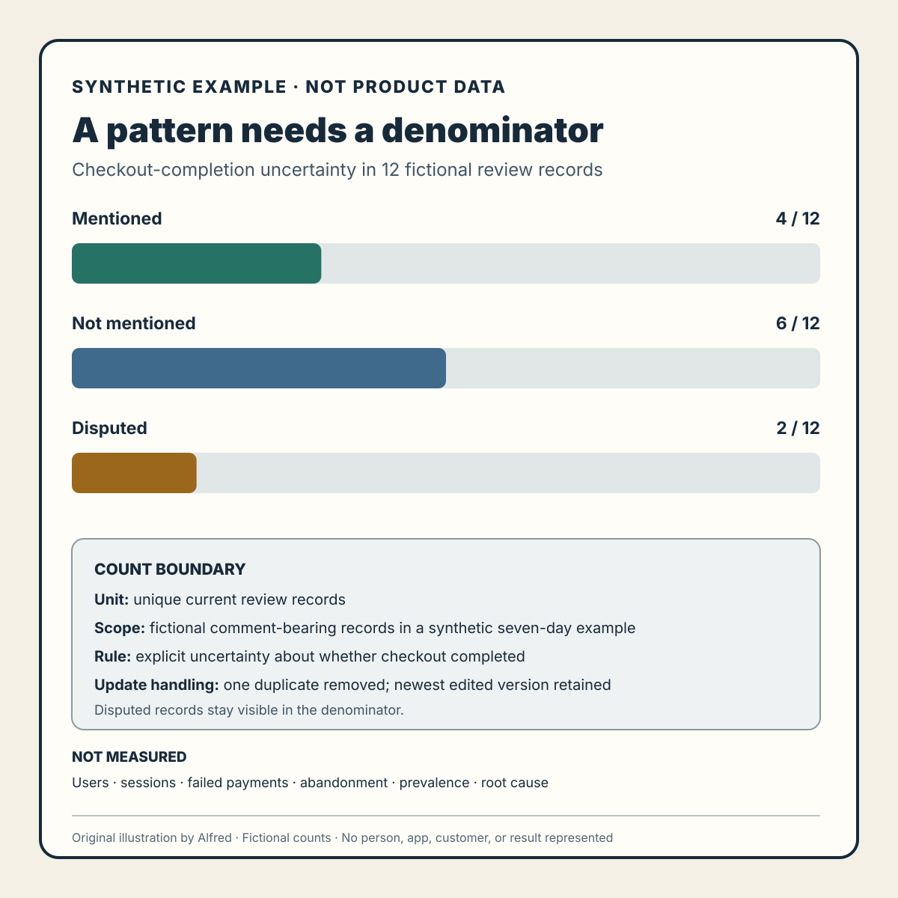

Product research
A review-pattern chart needs a denominator
Visualize one app-review pattern without turning a bounded set of comments into a claim about all users.
A bar labelled “checkout complaints: 31%” looks precise. Without a denominator and collection boundary, it may say almost nothing.
Thirty-one per cent of what: all ratings, ratings with comments, reviews returned by one API call, unique review IDs, or successfully classified comments? From which app version, storefront, language, and time window? Were edited reviews counted twice? Did the source expose the full history?
A useful public chart should let a reader answer those questions without opening a methodology appendix. The goal is not to make a pattern look large. It is to show exactly what was counted, what was not, and what question the result can support.
Start with the claim the data can actually make
Review data is usually evidence about reviews, not a census of users or product events.
Google’s first-party Reply to Reviews documentation states that its API covers production-version reviews that contain comments and that recent retrieval is limited to reviews created or modified within the previous week. It points to a Play Console CSV export for older history. Those boundaries make several common labels unsafe:
- “share of users” when the denominator contains reviews;
- “all feedback” when ratings without comments are absent;
- “historical trend” when only a recent retrieval window was used;
- “current version” when version fields were missing or mixed;
- “new complaints” when edited reviews can appear as modified.
Prefer a bounded claim:
4 of 12 unique, comment-bearing review records in this synthetic seven-day example mention uncertainty about whether checkout completed.
That sentence names the numerator, denominator, unit, coverage, and topic. It still does not establish how often checkout fails, how many customers were affected, or why the reviewers wrote what they did.
Build a count ledger before drawing the chart
A chart should be the final view of a small, auditable ledger. Record at least:
| Field | Purpose |
|---|---|
| Source and retrieval method | Identifies the platform surface and whether data came from an API, export, or authorized manual review. |
| Retrieval start and finish | Separates collection time from review creation time. |
| Platform filters | States comment-only, production-only, territory, rating, language, or version limits. |
| Pagination result | Shows whether every available page in the declared query completed. |
| Raw records received | Preserves the pre-cleaning denominator. |
| Unique records after update handling | Prevents an edited review from silently becoming two people. |
| Records eligible for classification | Identifies exclusions such as unsupported language or empty text. |
| Records assigned to the pattern | Supplies the numerator. |
| Classification rule and version | Makes the count reproducible when labels change. |
| Unknown or disputed records | Keeps uncertainty visible instead of forcing every item into a category. |
Keep raw evidence and derived labels separate. The source record may contain text, a source identifier, timestamps, and technical context. The analysis layer should contain the pattern label, rule or prompt version, confidence or review state, and any correction. That separation makes it possible to revise the taxonomy without rewriting the evidence.
Use a synthetic example to test the presentation
The following numbers are fictional. They demonstrate chart construction; they are not observations from an app, customer, account, or published dataset.
SYNTHETIC INPUT LEDGER
14 records returned by the declared query
- 1 duplicate page result removed
- 1 newer version of an edited review retained; older version excluded
= 12 unique current review records
PATTERN ASSIGNMENT
4 mention uncertainty about whether checkout completed
6 do not mention that pattern
2 remain disputed after review
A compact text chart could say:
Checkout-completion uncertainty
Mentioned 4 / 12 ████
Not mentioned 6 / 12 ██████
Disputed 2 / 12 ██
Unit: unique current review records
Scope: fictional comment-bearing records in a synthetic seven-day example
Rule: explicit uncertainty about whether checkout completed
Not measured: users, sessions, failed payments, abandonment, or root cause
Do not drop the disputed records from the denominator merely to get a cleaner percentage. If a secondary view uses only classified records, label the changed denominator explicitly: “4 of 10 classified records,” not “40% of reviews.” Showing both views can be useful, but they answer different questions.
A reusable companion chart

The same fictional count is available as an original square SVG chart. It keeps all 12 records in each bar, leaves the two disputed records visible, and places the count boundary beside the graphic: unit, synthetic scope, classification rule, duplicate and edit handling, and what was not measured.
{kind=link}
The chart is a presentation example, not a reusable claim. Replace its fictional values only after completing the ledger above, and keep the resulting numerator, denominator, unit, scope, rule, and uncertainty together when the image is copied or resized. Do not detach the bars from the “synthetic example” and “not measured” labels. No person, app, customer, review dataset, or product result is represented.
Define the pattern so another reviewer can disagree
A label such as checkout problem is too broad to reproduce. Define inclusion and exclusion in observable terms.
For the synthetic example:
Include a record when its text explicitly says the writer could not determine whether checkout, payment, or order submission completed.
Exclude a record when it discusses price, payment-method availability, or a declined payment but the completion state was clear.
Dispute a record when the wording could refer either to checkout completion or to a later confirmation message and the available context cannot distinguish them.
This rule does not diagnose a technical failure. It identifies one reported uncertainty in the text. A separate investigation would be needed to reproduce the path, inspect system state, or test candidate causes.
If machine assistance suggests labels, report the human-review boundary and retain an abstain route. A generated classification is not a customer statement. A reviewed classification is still an interpretation, not proof of incidence or causality.
Make the privacy check about identifiability, not names alone
Removing a display name is not always enough to make a public example safe. A distinctive quotation, exact timestamp, unusual location, rare device combination, or small subgroup can make a person reasonably identifiable when combined with other available information.
The UK Information Commissioner’s Office describes identifiability as a broad concept and advises assessing the means reasonably likely to be used to identify someone. Its anonymisation guidance discusses combining techniques such as masking, generalisation, and synthetic data generation rather than treating deletion of direct identifiers as a complete solution.
For a public pattern chart:
- publish aggregate counts rather than searchable quotations by default;
- suppress or combine very small groups when singling out is plausible;
- generalize timestamps, territories, versions, and device details unless they are necessary;
- use synthetic examples when real row-level evidence adds no public value;
- keep the source evidence in an authorized environment with an appropriate retention rule;
- do not infer sensitive traits or profile an individual;
- document the release decision and revisit it if the surrounding data changes.
“Aggregate” is not a magic safety label. A cell containing one unusual record can still expose a person. If the result cannot be explained usefully without making someone identifiable, keep it private.
Treat patterns as investigation prompts
GOV.UK’s guidance on analysing research sessions recommends extracting observations, looking for patterns or clusters, determining findings, and deciding actions. It also notes that isolated observations can be recorded without being treated as findings. That is a useful discipline for review analysis: preserve the observation, show the cluster rule, and keep the resulting action proportional to the evidence.
A review-pattern chart can support questions such as:
- Which symptom should be reproduced first?
- Which product version needs a focused comparison?
- Which classification disagreement needs a clearer rule?
- Which task should be observed in consented research?
- Did the topic count change after the collection or taxonomy changed?
It cannot by itself answer:
- What percentage of users experienced the issue?
- Did the issue cause abandonment or lost revenue?
- Which component is the root cause?
- Will a proposed fix improve the outcome?
- Is one reviewer representative of a population?
Publication checklist
Before releasing one review pattern and its visualization:
- name the source, retrieval method, and authorization boundary;
- state the requested and actual time coverage;
- list platform-imposed filters and known missing classes of feedback;
- confirm pagination and record failed retrievals;
- define whether the unit is records, unique review IDs, review versions, or something else;
- document duplicate and edited-review handling;
- show the numerator and denominator together;
- keep unknown and disputed classifications visible;
- define the pattern with inclusion and exclusion examples;
- disclose whether labels were generated, reviewed, or approved;
- avoid translating review share into user incidence;
- remove or generalize details that could identify a person;
- use synthetic examples unless real excerpts are necessary and authorized;
- state what the chart does not measure;
- record the next investigation rather than presenting the pattern as a verdict.
The smallest honest chart is often the most useful: one bounded pattern, one visible denominator, one reproducible rule, and one clear statement of what remains unknown.
Source notes
- Google for Developers, Reply to Reviews: first-party documentation supporting the production-version, comment-bearing, recent-retrieval, historical-CSV, pagination, and review-context boundaries described above.
- UK Information Commissioner’s Office, How do we ensure anonymisation is effective?: official guidance supporting the broad identifiability-risk framing and the use of masking, generalisation, and synthetic data among possible anonymisation techniques.
- GOV.UK Service Manual, Analyse a research session: official guidance supporting the progression from observations to patterns, findings, and actions while retaining isolated observations appropriately.
All three source URLs returned HTTPS 200 during research on 2026-08-12. Focused source review confirmed Google’s production/comment-only and one-week recent retrieval boundaries plus historical CSV route; the ICO’s broad, risk-based identifiability framing and combined anonymisation techniques; and GOV.UK’s observation, clustering, finding, and action workflow. These sources support the note’s collection, privacy, and analysis boundaries. They do not validate the fictional counts, certify anonymisation, establish incidence or causality, authorize publication of any review data, or prove a product result.